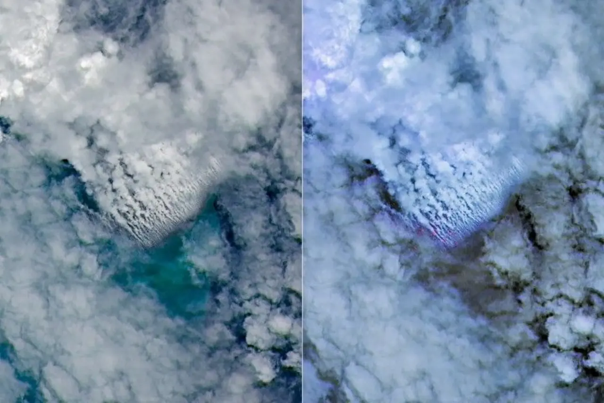

해저 화산은 산꼭대기가 보이는 화산과 다르게 시작부터 사람의 눈을 피합니다. 바다 밑에서 마그마와 물이 만나고, 그 결과가 한참 뒤에야 바다 표면의 색 변화, 부석, 수증기 기둥으로 올라옵니다. 2026년 5월 비스마르크해에서 포착된 분화도 그래서 현장 사진보다 위성 신호가 먼저 말문을 열었습니다.
NASA Earth Observatory는 파푸아뉴기니 북쪽 비스마르크해에서 2026년 5월 8일 무렵 예기치 않은 해저 화산 활동이 시작됐고, 며칠 뒤 위성 영상에서 수증기가 많은 화산 기둥과 변색된 바닷물이 뚜렷하게 보였다고 설명했습니다. 이 지역은 해저 지형이 복잡하고 깊은 바다까지 촘촘하게 측량돼 있지 않아, 분화구가 정확히 어디인지부터 쉽게 단정하기 어렵습니다.
흥미로운 점은 위험을 알아차리는 순서입니다. 사람이 배를 타고 가까이 가기 전에, 지진계가 먼저 작은 흔들림을 잡고 위성이 바다 표면의 이상한 무늬를 봅니다. 해저에서 일어난 일인데도 판단의 첫 단서는 하늘에서 내려온다는 뜻입니다. 비스마르크해 사례는 화산학이 현장 조사만으로 움직이는 분야가 아니라, 원격 관측과 해양 자료를 엮어 위험을 좁혀 가는 분야임을 잘 보여줍니다.
바다가 먼저 색을 바꿉니다

해저 화산 분화는 물속에서 폭발이 일어나기 때문에 분화구의 모양을 바로 보기 어렵습니다. 대신 바다 표면에는 다른 흔적이 남습니다. 뜨거운 물과 화산 입자가 섞이면 물빛이 탁해지고, 잘게 부서진 화산암이 물 위로 떠오르며, 수증기와 가스가 구름 사이로 솟습니다. 이 흔적이 넓은 바다 위에 퍼지면 배 한 척의 시야로는 전체 방향을 잡기 어렵습니다.
NASA가 공개한 2026년 5월 11일 Landsat 9 OLI 관측 사진에는 구름 주변으로 올라오는 화산 기둥과 바다 표면의 변색이 함께 보입니다. 이 이미지는 분화가 시작된 지 사흘가량 지난 뒤의 장면입니다. 한 장의 사진만으로 분화 규모를 단정할 수는 없지만, 어디에서 물질이 올라오고 어느 방향으로 흘러가는지는 상당히 구체적으로 좁힐 수 있습니다.
바다 색 변화는 단순한 색감 문제가 아닙니다. 물속 입자 농도, 떠다니는 부석, 가스가 많은 물, 주변 해류가 함께 만든 결과입니다. 그래서 같은 초록빛이나 흰빛이라도 해양 생태, 항로 안전, 해저 지형 변화와 연결해서 읽어야 합니다. 분화가 깊은 곳에서 조용히 이어지는지, 얕은 곳에서 표면까지 물질을 밀어 올리는지도 이런 신호를 통해 조금씩 가려집니다.
특히 해저 화산의 표면 신호는 위치가 조금만 틀려도 해석이 달라집니다. 해류가 강하면 변색 수역은 분화구에서 멀리 밀려날 수 있고, 바람이 바뀌면 수증기 기둥도 다른 방향으로 누울 수 있습니다. 그래서 사진 속 흰색 띠를 곧바로 분화구 위치로 읽기보다, 시간별 이동과 주변 해류를 함께 봐야 합니다.
위성은 배보다 넓게 봅니다
해저 화산에 가까이 다가가는 일은 생각보다 까다롭습니다. 부석은 배의 냉각수 흡입구나 추진 장치에 부담을 줄 수 있고, 수면 아래에서는 예상하지 못한 난류가 생길 수 있습니다. 화산재와 가스가 위로 올라오면 항공과 주변 선박에도 영향을 줄 수 있습니다. 현장 조사는 꼭 필요하지만, 무턱대고 먼저 들어가기에는 위험이 큽니다.
이럴 때 위성은 넓은 지도 역할을 합니다. Aqua와 Terra 같은 지구 관측 위성은 구름 사이의 수증기 기둥과 바다 표면의 밝은 흔적을 반복해서 확인할 수 있습니다. PACE 위성의 해색 관측은 물이 평소와 다르게 흐려진 범위를 보는 데 도움이 됩니다. 한 위성의 한 장면이 아니라 여러 관측을 이어 붙여야 분화 물질이 어디로 이동하는지 알 수 있습니다.
위성 관측의 장점은 같은 장면을 여러 눈으로 다시 확인할 수 있다는 데 있습니다. 자연색 사진은 사람이 이해하기 쉽고, 적외선 관측은 열과 입자 신호를 더 분명하게 보여 주며, 해색 자료는 탁해진 물의 범위를 다른 방식으로 잡아냅니다. 서로 다른 자료가 같은 방향을 가리킬 때 비로소 경보의 확신이 높아집니다.
물론 위성도 모든 것을 해결하지는 못합니다. 구름이 많으면 광학 영상이 가려지고, 해저 분화구의 깊이나 실제 지형 변화는 수면 위 색만으로 알 수 없습니다. 그래서 과학자들은 위성, 지진계, 해상 관측, 음향 탐사, 해저 지형 자료를 함께 맞춰 봅니다. 비스마르크해처럼 고해상도 해저 지도가 부족한 지역에서는 이 조합이 더 중요해집니다.
항로와 생태계가 함께 흔들립니다
해저 화산 분화의 위험은 폭발 장면 하나로 끝나지 않습니다. 부석이 바다 위에 넓게 퍼지면 작은 선박뿐 아니라 상업 항로에도 부담이 됩니다. 수면 위에서는 별것 아닌 돌조각처럼 보여도, 밀도가 낮은 부석 무리는 물과 함께 움직이며 장비를 막거나 선박 운항 계획을 바꾸게 만들 수 있습니다. 바다에서는 위험이 고정된 점이 아니라 흘러가는 면으로 나타납니다.
해양 생태계도 같은 이유로 영향을 받습니다. 화산 물질은 일부 영양염을 공급해 플랑크톤 활동에 변화를 줄 수 있지만, 동시에 탁도와 산성도, 금속 성분 문제를 일으킬 수 있습니다. 어느 쪽 영향이 큰지는 분화 물질의 양, 바닷물 깊이, 해류, 주변 생물 군집에 따라 달라집니다. 그래서 이 사건을 단순히 장관이나 재난 중 하나로만 보는 것은 부족합니다.
바다가 탁해진 구역이 넓어지면 어장과 산호초 주변의 빛 조건도 달라질 수 있습니다. 짧은 변화라면 생태계가 흡수할 수 있지만, 분화가 길어지거나 같은 방향으로 물질이 계속 흘러가면 영향은 국지적 사건에 머물지 않습니다. 과학자들이 부석의 양과 물빛 변화를 같이 보는 이유는 눈에 띄는 위험과 천천히 누적되는 변화를 함께 확인하기 위해서입니다.
지역사회 입장에서는 정보의 속도가 중요합니다. 항구와 어업, 연안 마을은 바다에서 실제로 무엇이 떠오르는지 확인해야 하고, 정부 기관은 접근 제한과 항행 경보를 판단해야 합니다. 파푸아뉴기니 당국이 모니터링을 강조하는 이유도 여기에 있습니다. 해저에서 시작된 현상이 사람의 생활권에 닿기까지 시간이 많지 않을 수 있기 때문입니다.
다음 신호는 반복성입니다
이번 분화를 볼 때 가장 조심해야 할 부분은 한두 장면으로 결론을 서두르는 일입니다. 해저 화산은 분화가 며칠 만에 잦아들 수도 있고, 약해졌다가 다시 강해질 수도 있습니다. NASA 설명에 따르면 이번 활동은 과거 1972년 해저 분화가 있었던 위치와 가까운 Titan Ridge 부근에서 일어나는 것으로 추정되지만, 정확한 분화 지점과 깊이에는 아직 불확실성이 남아 있습니다.
따라서 앞으로의 관측에서는 반복성이 중요합니다. 같은 위치에서 계속 수증기 기둥이 올라오는지, 변색된 물이 어느 방향으로 퍼지는지, 부석 띠가 커지는지 줄어드는지, 지진 활동이 함께 이어지는지를 봐야 합니다. 하루치 위성 사진보다 며칠 간격의 변화가 더 많은 것을 말합니다. 위험이 줄어드는지, 방향만 바뀌는지도 시간표 안에서 확인됩니다.
여기에 현장 자료가 붙으면 판단은 한 단계 더 정확해집니다. 선박이 안전한 거리에서 물 샘플을 채취하고, 해저 음향 탐사가 지형 변화를 확인하며, 드론이나 항공 관측이 분화 기둥의 높이와 방향을 보태면 위성 사진의 해석 범위가 좁아집니다. 위성은 시작점을 알려 주고, 현장은 그 신호가 실제로 무엇을 뜻하는지 확인하는 역할을 맡습니다.
독자가 이 뉴스를 볼 때 확인할 기준은 분명합니다. 분화구 위치가 더 정확히 좁혀졌는지, 해저 지형 탐사가 보강됐는지, 부석과 변색 수역의 이동 경로가 항로와 가까운지, 지역 당국의 경보가 어떻게 바뀌는지를 살펴보면 됩니다. 해저 화산은 현장에 가야만 알 수 있는 대상처럼 보이지만, 지금 단계에서는 위성 신호를 차분하게 이어 읽는 일이 가장 빠른 접근입니다.
관련 영상
A Major Explosive Eruption is Ongoing; The Media is Missing It
비스마르크해의 새 분화는 바다가 숨기는 사건을 어떻게 읽어야 하는지 보여 줍니다. 현장 조사는 마지막 답을 주지만, 첫 판단은 위성의 반복 관측에서 나옵니다. 바다의 색, 떠다니는 부석, 수증기 기둥, 작은 지진이 같은 방향을 가리킬 때 해저 화산은 비로소 지도 위의 위험으로 바뀝니다.